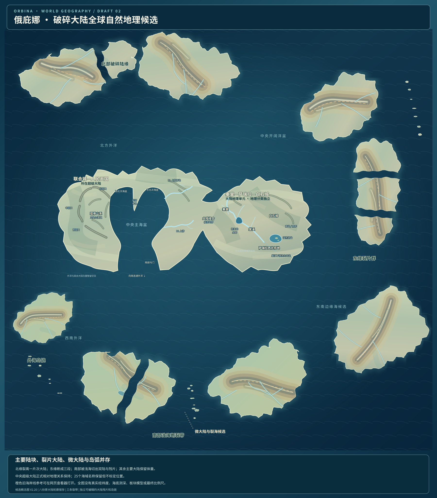
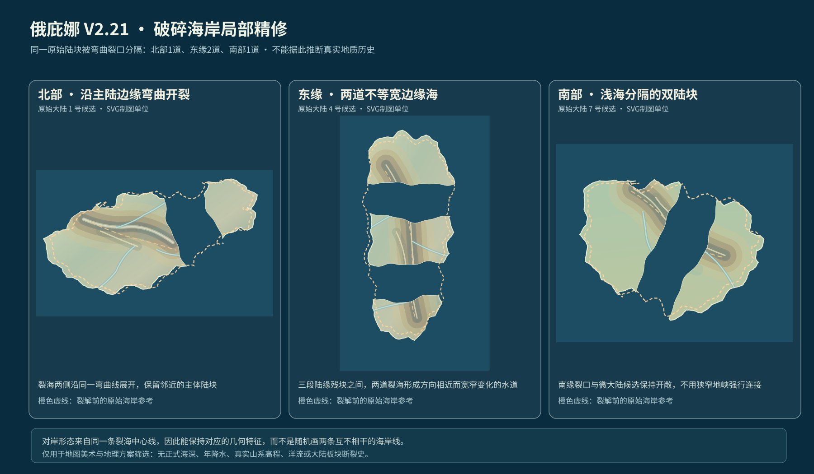

新版主图可切换的图层
载入 SVG 矢量地图…
之前：V2.20

破碎带相对均匀，浅海晕染沿旧完整岸线，没有完全跟随新裂口。
现在：V2.21
弯曲、不等宽的裂海岸线；近岸视觉效果按陆地剪裁，岛链疏密重新调整。
北部、东缘和南部的局部放大对照

同一裂缝的两岸彼此对应，海峡宽度不再均匀；近岸浅水光晕遵循裂开的新陆缘。以下均为候选设计。
载入 SVG 矢量地图…

破碎带相对均匀，浅海晕染沿旧完整岸线，没有完全跟随新裂口。
弯曲、不等宽的裂海岸线；近岸视觉效果按陆地剪裁，岛链疏密重新调整。
